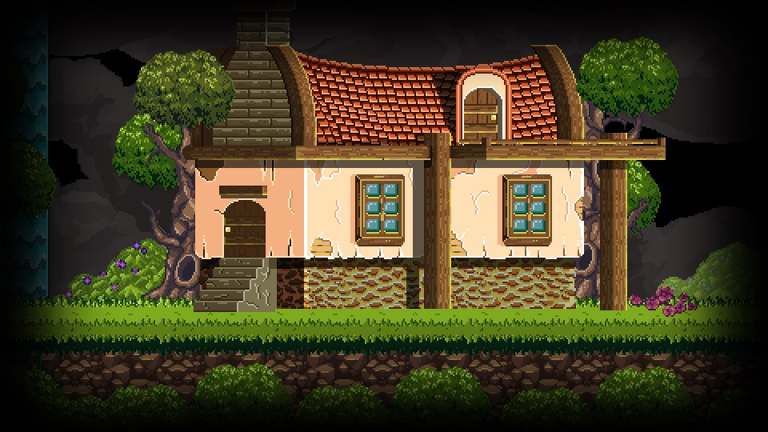
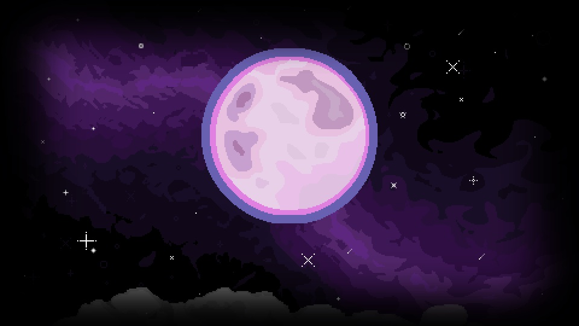
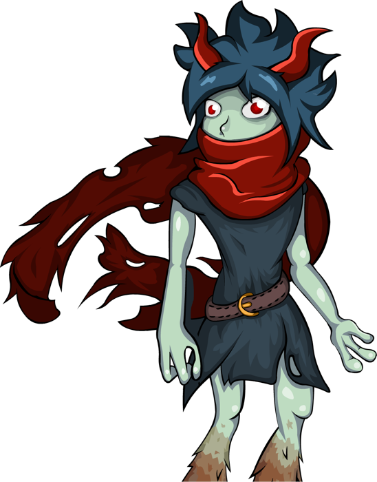

Что такое Catmaze
Catmaze вышла в 2018 году. Это метроидвания по мотивам славянских мифов, и начинается она дома: мама юной ведьмы Алесты тяжело больна, отвары Воронихи уже не помогают. Спасти её можно только через Навь, мир мёртвых. Дорога туда давно потеряна.
Проводники в этом мире коты. Они ходят между Явью и Навью, за это им и дали девять жизней. Кот Баюн готов один раз нарушить порядок ради мамы Алесты. Чем это обернётся, игра расскажет сама.
Дальше болота, деревни и вековые леса с кикиморами, анчутками и русалками. Боссы пришли из сказок, и у каждого своя история. В бою помогают фамильяры, а от побочных квестов зависит, чем всё закончится. Сохраняться можно только в особых местах, как в старых метроидваниях.


Столько человек сделали Catmaze. Слава Грис сам написал код на Construct 2 и сам нарисовал весь мир: уровни, спрайты, портреты. Со стороны только музыка, её написали Expecte Amour. А в 2022 году игра вышла на Nintendo Switch, PlayStation и Xbox. Для инди-игры одного автора попасть на Switch - уже серьёзная планка.
- Вышла на ПК
- 24 мая 2018
- На консолях
- 9 сентября 2022
- Steam
- 606 отзывов, 83% положительных
- Движок
- Construct 2
- Модов
- Пока ни одного
- Windows
- Mac
- Linux
- Nintendo Switch
- PlayStation 4
- PlayStation 5
- Xbox One
- Xbox Series X|S
Что войдёт в мод
Это план, к которому идём. Код, сборку и звуковые эффекты я беру на себя, остальное делаем командой.
Портреты персонажей
Ищем людей26 героев рисуем заново в одном стиле. Узнаваемость сохраняем: цвета, силуэты, характер.
Позы и эмоции
Ищем людейУ каждого героя базовая поза и смена эмоций под реплики. Всё уже расписано: 189 эмоций на 1 477 реплик.
Анимация персонажей
Ищем людейМоргание и смена эмоций в портретах, новые анимации пиксельным героям.
Пиксельные скины
Ищем людейНовые наряды для Алесты. В её основном спрайте около 150 маленьких кадров.
Интерфейс диалога
Ищем людейОкно реплики, плашка с именем, смена говорящего. Всё должно читаться в родном разрешении игры 480×270.
Новые ассеты
Ищем людейБочки, ящики и другие объекты для уровней.
Звуковые эффекты
Делаю самаСейчас диалог просто листается, и герои на него никак не отзываются. Добавим звуки: кашель мамы в первой сцене, вздохи, смешки, реакции.
Импакт
Делаю самаДоработаем отклик игры на удары, попадания и действия.
Озвучка
В планахХотим, чтобы герои заговорили. Реплик почти 1 900, поэтому сроки пока не ясны.
Комиксные вставки
В планахРисованные вставки для сюжетных сцен.
Есть идея сверх списка?
Предлагай. Если она ложится в игру, обсудим, нарисуем и встроим.
Мод как вход в индустрию
Своя игра делается годами. Мод занимает пару месяцев, и на выходе твоя работа живёт внутри настоящей игры в Steam.
Через моды в индустрию попадали многие. Counter-Strike начинался как мод для Half-Life. Dota выросла из пользовательской карты для Warcraft III.
Для портфолио это весомее учебного задания. Сразу видно, что ты умеешь работать по брифу, попадать в общий стиль и доводить дело до релиза.
Что ты получишь
- Имя в титрах мода, в руководстве в Steam и на странице мода на Nexus Mods.
- Разбор каждой работы: что получилось, что поправить и почему.
- Опыт работы по брифу и с правками, как в студии.
- Кейс для портфолио: от эскиза до кадра в игре.
- Советы по портфолио и о том, как устроена работа в геймдеве.
Пайплайн
Рисовать будут разные люди, а выглядеть всё должно как работа одного художника. Поэтому сначала общие правила и модельный лист, потом рисунки. Каждую работу я смотрю и свожу в общий стиль.
Разобрать игру
929 файлов игры собраны и описаны. Каждый герой расписан по репликам.
ГотовоПравила стиля
Пропорции, толщина линий, детализация, палитры, силуэты. Из этого получится модельный лист для всех.
СейчасИнтерфейс
Варианты окна диалога, проверка в разрешении 480×270.
ДальшеПерсонажи
Портреты, позы, эмоции, анимация, скины.
ДальшеЗвук
Звуковые эффекты в диалогах и, если получится, озвучка.
ДальшеСборка и релиз
Собираю всё в игру, тестирую и выкладываю в Steam и на Nexus Mods.
Дальше
Путь одного героя
- Бриф
- Три силуэта
- Выбираем направление
- Чистовик по модельному листу
- Эмоции и веки на слоях
- Проверка в игре
- Правки
- В сборку
Лист на каждого героя
Что сохранить, что упростить, какие цвета и как сыграть каждую эмоцию. Вот Волибор.

- Синие волосы и красные рога
- Красный шарф, светлая серо-зелёная кожа
- Острые уши и мех на голенях
- Рука у шарфа, открытый жест другой рукой
- 3–5 крупных масс волос вместо мелких острых прядей
- Фалды жилета проще, цвет и форма те же
- Одна основная тень на материал
- Глаза, контур и голова по общему модельному листу
Живость и готовность двинуться с места.
| Код | Состояние | Как передать в рисунке |
|---|---|---|
| N | Обычный разговор | Внимательные глаза, расслабленные брови, маленький рот. |
| H | Смущение | Взгляд вниз, брови приподняты внутри, неловкая улыбка быстро исчезает. |
| J | Восторг | Открытый радостный взгляд, поднятые брови, улыбка. |
| K | Заговорщицкая надежда | Прищур с улыбкой, взгляд возвращается к Алесте. Без зловещей ухмылки. |
| D | Решимость | Брови сведены, прямой взгляд, напряжённый ровный рот. |
| W | Нежность, облегчение | Глаза смягчены, брови расслаблены, тихая улыбка. |
Остальные эмоции, позы и сцены есть в полном брифе. Осторожно, там спойлеры.
Кого можно взять
26 героев с портретами. Число эмоций показывает объём: Чудовищу хватит двух, Алесте нужно тринадцать. Хочешь нарисовать кого-то конкретного, скажи, договоримся.
Портреты на доске взяты из оригинальной игры. Домового, Жреца и Чернобога придумываем заново: прежние варианты не подошли. Идеи художника тут особенно к месту, направление выберем вместе.
Роли в команде
Художник
Берёшь одного или нескольких героев: базовая поза, дополнительные позы и эмоции по брифу. Веки и рот на отдельных слоях, чтобы их можно было анимировать. Позже будут комиксные вставки и ассеты для уровней.
Рисуешь персонажей и понимаешь, как работают форма, мимика и цвет.
Аниматор
Моргание, смена эмоций и поз во время диалога, новые движения героям.
Анимируешь персонажей в любой программе.
Пиксель-арт художник
Скины для Алесты и новые пиксельные ассеты.
Рисуешь пиксель-арт и анимируешь спрайты.
UX/UI-дизайнер
Окно диалога, плашка с именем, рамки. И то, как диалог ощущается: появление реплик, смена говорящего.
Делаешь макеты интерфейсов в Figma или похожем редакторе.
Звук и музыка
Звуковые эффекты и музыкальные акценты. Основное делаю сама, но вдвоём быстрее и интереснее.
Работаешь со звуком или пишешь музыку.
Актёр озвучки
Если дойдём до озвучки: почти 40 ролей, от Алесты до говорящих котов.
Умеешь играть голосом.
Другие творческие люди
Умеешь что-то, что пригодится моду? Напиши, обсудим.
Одна просьба: приходи с базовым навыком в своём деле.
Мод делается за пару месяцев, и за это время научиться рисовать или работать со звуком с нуля просто не успеть. Подсказать, направить и разобрать работу я помогу всегда. Опыт работы не нужен, учебные проекты тоже подойдут.
Пара слов от меня
Привет! Я Фатима, геймдизайнер. В этом моде на мне пайплайн, брифы, код, звук и сборка.
Каждый рисунок проходит через меня, чтобы работы разных людей сложились в один стиль. Если удобнее поговорить вживую, давай встретимся в кофейне и всё обсудим.
Пять шагов в команду
Напиши мне
Какая роль, какой герой и 2–3 твои работы. Учебные подойдут.
Тестовое
Художнику три силуэта выбранного героя. Остальным примеры своих работ: анимации, спрайты, макеты, звуки или проба голоса.
Бриф и сроки
Обсуждаем задачу и темп. Можно вживую, в кофейне.
Работа с разборами
Показываешь промежуточные версии, я даю обратную связь.
Релиз
Мод выходит, твоё имя в титрах.
Вопросы и ответы
Это официальный проект?
Нет, фанатский. Разработчик игры в нём не участвует, мод делаем своими силами.
Сколько за это платят?
Нисколько. Мод бесплатный и для игроков, и для команды. Взамен опыт, разборы и имя в титрах.
Нужен ли опыт?
Стаж не важен, учебные работы тоже подойдут. Главное, чтобы навык уже был: рисуешь, анимируешь, делаешь интерфейсы или работаешь со звуком.
Сколько времени это займёт?
Примерно 1–2 месяца, может, чуть дольше. Темп обсуждаем вместе. Не успеваешь, скажи заранее, ничего страшного.
А если я передумаю?
Предупреди меня. Герой вернётся на доску, а то, что уже вошло в мод, останется с твоим именем в титрах.
Можно предложить свою идею?
Конечно. Расскажи, и решим вместе, впишется ли она в игру и в сроки.
Можно выкладывать работы в портфолио?
Да. Продавать нельзя: персонажи и мир принадлежат автору игры.
Нужно что-то подписывать?
Да, короткое соглашение: мод бесплатный, ты автор своих работ и можешь показывать их в портфолио. Если тебе ещё нет 18, его подпишет и кто-то из родителей.
Где выйдет мод?
В сообществе Catmaze в Steam, в виде руководства с установкой, и на Nexus Mods. Файлы будут лежать на Google Диске и Яндекс Диске. Мастерской Steam у игры нет, так что мод ставится по инструкции.